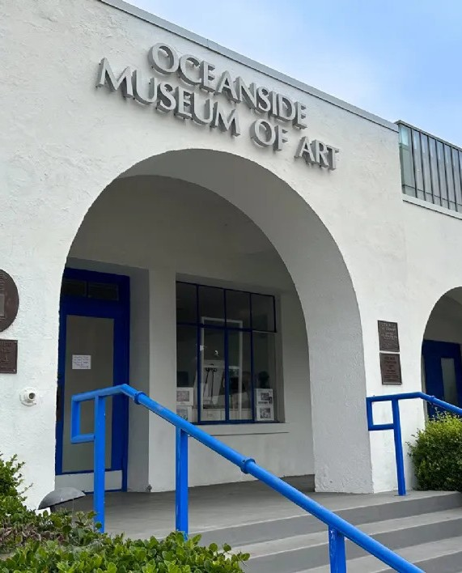

By Me!
Artist Statement:
I wanted to paint the beauty of our world. There’s a lot wrong with it, of course, but a lot of it is beautiful and amazing as well. The first place my mind went with that thought was nature; the pristine, undisturbed landscapes where nobody has managed to destroy stuff yet. Similar to transcendentalist paintings from the 1830s, I started my concentration with pieces glorifying nature. As I made progress, however, I wanted to try and switch from depicting the undisturbed beauty of nature to highlighting the chaotic, unique beauty of humanity. The third work in my concentration illustrated this, taking the beauty of nature I had focused on and adding into it an element of human connection through the lovers on the cliff. My final piece, the one I didn’t finish, was intended to drive that point home; the same style and techniques I’d learned with my previous works to glorify nature, I switched to using to romanticise a human city.
Exibition History

Oceanside Museum of Art
As part of the 2026 Congressional Art Competition, I submitted "Undisturbed". The piece did well, making it through the preliminary round to be displayed alongside 45 others at the Oceanside Museum of art during the month of March.
Leucadia Corner Frame Shop
As part of Seminar in art 2026, I got the oportunity to display a piece at an exhibition run by the Leucadia Frame Shop.